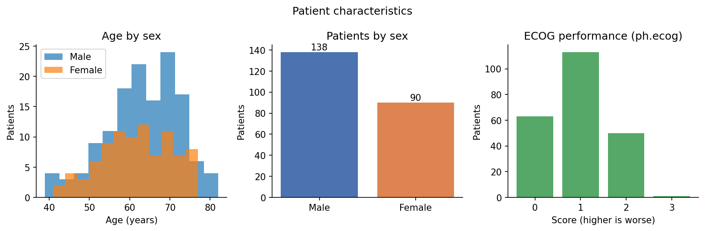
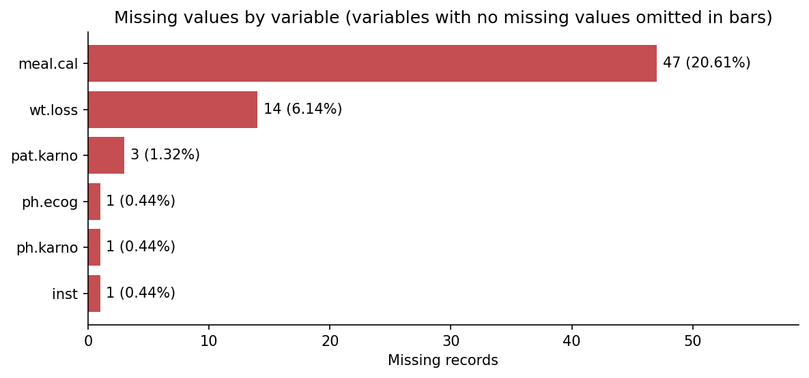
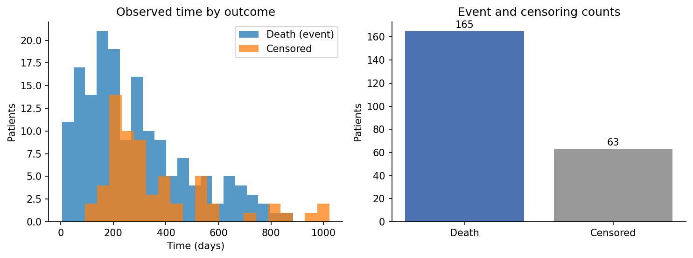
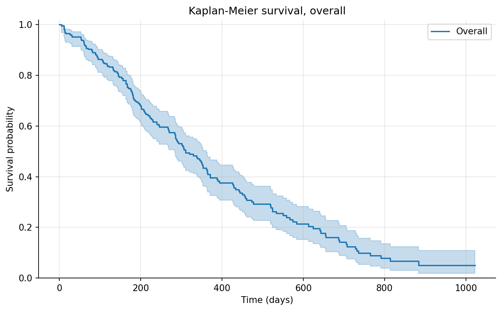
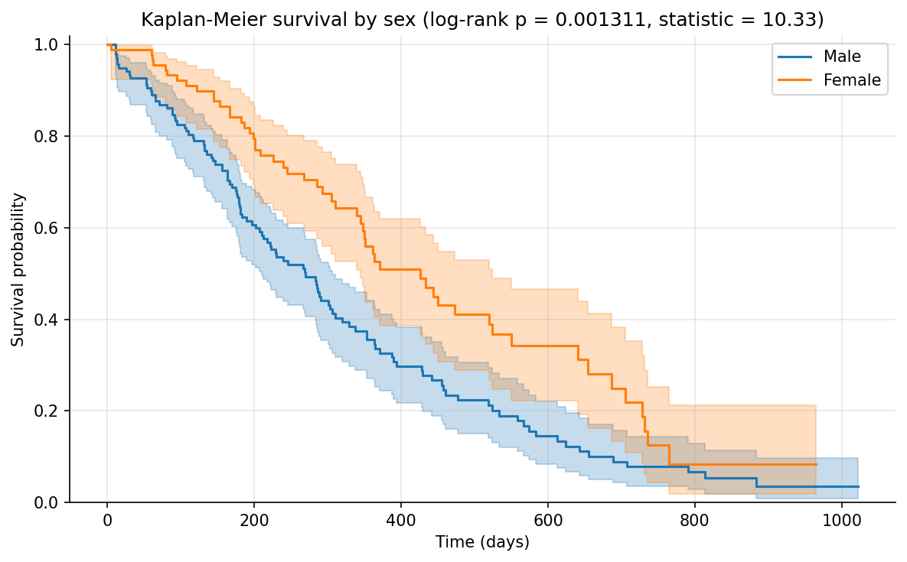
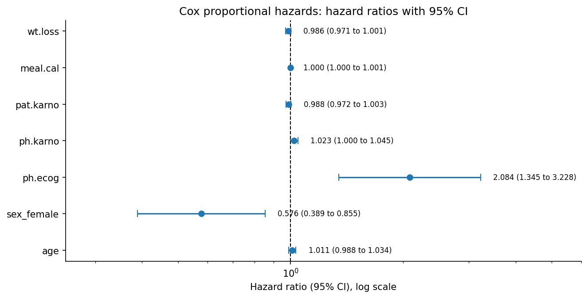
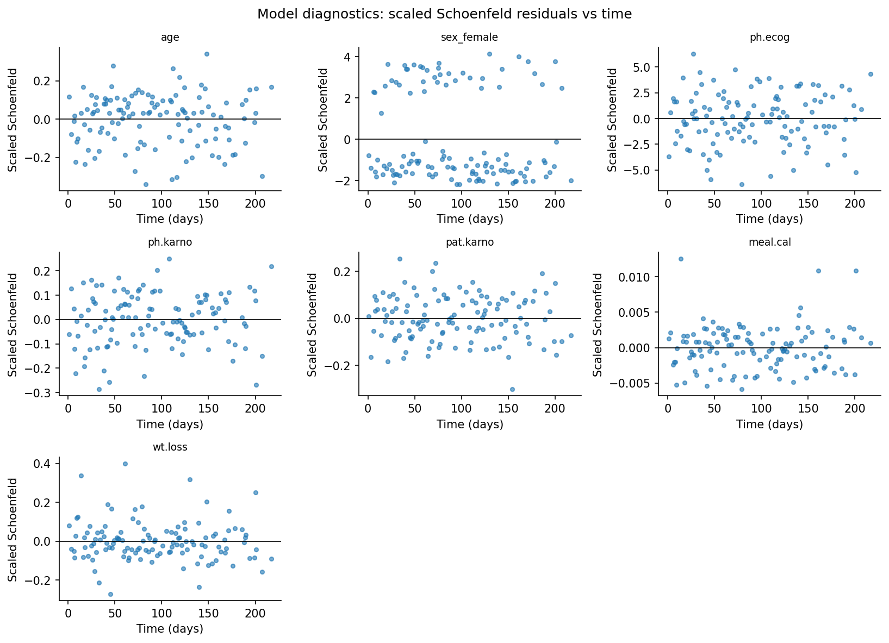
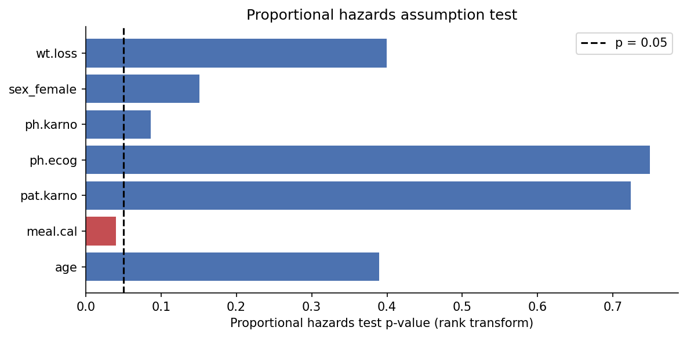

Independent project · Biostatistics and survival analysis
Clinical Survival and Risk Factor Analysis
An analysis of survival patterns in the NCCTG lung cancer dataset, using Kaplan-Meier estimation, the log-rank test, and Cox proportional hazards regression to examine how survival differs between groups and which clinical variables are associated with the hazard of death.
Technologies: Python, Pandas, Lifelines, NumPy, Matplotlib, and Streamlit. This is an academic analysis of a historical trial dataset. Hazard ratios are adjusted associations, not causal effects, and the model is not a clinical decision tool.
Overview
The question is descriptive and associational: what do survival patterns look like in this cohort, and which recorded clinical variables are associated with survival time after adjusting for the others? The analysis uses standard biostatistical methods and reports uncertainty at each step.
Of the 228 patients, 165 died during follow-up (72.4 percent) and 63 were censored (27.6 percent), meaning their death was not observed in the study period. Observed follow-up time runs from 5 to 1022 days, with a median of 255.5 days. Patients were 138 male and 90 female. Mean age was 62.4 years (SD 9.1, range 39 to 82).
The reference repository AmiRaGaL/clinical-survival-analysis-dashboard (MIT License) was inspected for scope and method family before this work. This project is a separate implementation, and no code was copied from it.
Dataset source and attribution
The data are the NCCTG Lung Cancer Survival Dataset, loaded at runtime with lifelines.datasets.load_lung from the lifelines Python package. No patient-level data file is published on this page or included in the source download. Only aggregate statistics and figures are shown.
Original study: Loprinzi CL, Laurie JA, Wieand HS, et al. Prospective evaluation of prognostic variables from patient-completed questionnaires. North Central Cancer Treatment Group. Journal of Clinical Oncology. 1994;12(3):601-607.
Statistical library: lifelines. Davidson-Pilon C. lifelines: survival analysis in Python. Journal of Open Source Software. 2019;4(40):1317.
Event coding was verified in code before analysis. The loaded status column contains only 0 and 1, with 1 treated as death and 0 as censoring, matching the lifelines distribution and the known totals of 165 deaths and 63 censored records. Some documentation of the original NCCTG data describes a different coding (1 for censored, 2 for dead). That coding is not present in the lifelines version used here, and the code raises an error if unexpected status values appear, rather than silently recoding the data.
Recorded variables are institution code, age, sex, ECOG performance score rated by the physician (ph.ecog, higher is worse), Karnofsky performance scores rated by the physician (ph.karno) and by the patient (pat.karno), calories consumed at meals (meal.cal), and weight loss in the previous six months (wt.loss).
Data cleaning and missing values
The loaded data were checked for the expected columns, the event coding described above, and the sex coding (1 for Male, 2 for Female in the source), which is labelled in code. Missing values were counted for every source column:
| Variable | Missing records | Missing percent |
|---|---|---|
| meal.cal (calories consumed at meals) | 47 | 20.61% |
| wt.loss (weight loss, previous six months) | 14 | 6.14% |
| pat.karno (Karnofsky score, patient rated) | 3 | 1.32% |
| inst (institution code) | 1 | 0.44% |
| ph.karno (Karnofsky score, physician rated) | 1 | 0.44% |
| ph.ecog (ECOG performance score) | 1 | 0.44% |
No imputation was used. The Cox model uses complete case analysis: records with any missing value in the time, event, or covariate columns were excluded. That retained 168 of 228 records (121 of them events) and excluded 60. Because meal.cal alone is missing for about one in five patients, the complete case sample is much smaller than the full cohort, and it may differ from the full cohort if missingness is related to prognosis.
Kaplan-Meier survival estimation
Kaplan-Meier estimation gives the survival curve for the whole cohort and for each sex, accounting for censored patients. Median survival is the time at which the estimated survival probability reaches 0.5.
| Group | Patients | Deaths | Median survival | Survival at 365 days | Survival at 730 days |
|---|---|---|---|---|---|
| Overall | 228 | 165 | 310 days | 0.409 | 0.116 |
| Male | 138 | 112 | 270 days | 0.336 | 0.078 |
| Female | 90 | 53 | 426 days | 0.526 | 0.187 |
Estimated survival falls steadily: about 41 percent of patients are estimated to survive beyond one year, and about 12 percent beyond two years. The female curve sits above the male curve across most of follow-up, and the female median (426 days) is 156 days longer than the male median (270 days). These are unadjusted group summaries. They do not show that sex itself causes the difference.
Survival comparison by sex and the log-rank test
The log-rank test compares the full male and female survival curves, rather than a single time point, and tests whether the observed difference is compatible with identical survival in the two groups. For Male vs Female, the test statistic is 10.33 with a p-value of 0.0013. On a conventional 0.05 threshold, that is evidence against identical survival curves in this dataset.
The test is unadjusted. It does not account for age, performance scores, or any other difference between the groups, and it says nothing about why the curves differ. The adjusted comparison is the Cox model below.
Cox proportional hazards regression
The Cox model was fitted on the 168 complete cases, with seven covariates: age (per year), female sex (Female vs Male), ph.ecog, ph.karno, pat.karno, meal.cal, and wt.loss. A hazard ratio above 1 means a higher estimated hazard of death for a one unit increase in that variable, holding the others constant. A ratio below 1 means a lower estimated hazard. These are adjusted associations in this dataset, not causal effects.
| Variable | Hazard ratio | 95% CI | p-value |
|---|---|---|---|
| age (per year) | 1.011 | 0.988 to 1.034 | 0.3591 |
| sex_female (Female vs Male) | 0.576 | 0.389 to 0.855 | 0.0061 |
| ph.ecog (ECOG performance score) | 2.084 | 1.345 to 3.228 | 0.0010 |
| ph.karno (Karnofsky, physician rated) | 1.023 | 1.000 to 1.045 | 0.0457 |
| pat.karno (Karnofsky, patient rated) | 0.988 | 0.972 to 1.003 | 0.1232 |
| meal.cal (calories at meals) | 1.000 | 0.9995 to 1.0005 | 0.8979 |
| wt.loss (weight loss, six months) | 0.986 | 0.971 to 1.001 | 0.0652 |
Two associations are clearly separated from 1 in this sample. Female patients have an estimated hazard 0.576 times that of male patients after adjustment (95% CI 0.389 to 0.855, p = 0.0061), which is consistent with the unadjusted curves. Each one point increase in the ECOG performance score, where higher means worse function, is associated with an estimated hazard 2.084 times higher (95% CI 1.345 to 3.228, p = 0.0010).
The physician rated Karnofsky score has a small hazard ratio of 1.023 per point (95% CI 1.000 to 1.045, p = 0.0457), with the interval just above 1. For age, the patient rated Karnofsky score, calories at meals, and weight loss, the confidence intervals include 1, so this dataset does not clearly separate their adjusted associations from no association. The per unit scale matters: meal.cal is measured in calories, so a hazard ratio of 1.000 per calorie is expected even if a larger calorie difference mattered, and this analysis does not rescale it.
Proportional hazards assumption
The Cox model assumes each covariate's hazard ratio stays constant over time. This was checked with the lifelines proportional hazard test using a rank time transform, supported by scaled Schoenfeld residual plots.
One covariate falls below the 0.05 level: meal.cal, with a test statistic of 4.22 and p = 0.0399. That is a possible assumption concern, so its hazard ratio should be read with caution. In practice the concern has little effect on the conclusions, because the estimated meal.cal association is essentially 1 in any case. The remaining covariates are above 0.05: ph.karno (p = 0.0860), sex_female (p = 0.1507), age (p = 0.3897), wt.loss (p = 0.3996), pat.karno (p = 0.7239), and ph.ecog (p = 0.7493). With 168 records, these tests also have limited power, so a p-value above 0.05 is not proof that the assumption holds exactly.
Visualizations
These eight figures were generated by the analysis from the 228 patient NCCTG dataset. They show aggregates, survival curves, and model summaries only.


meal.cal is missing for 47 patients (20.61 percent), far more than any other variable. This drives the smaller Cox sample.



ph.ecog (2.084) and female sex (0.576) are the associations clearly separated from 1.

meal.cal (p = 0.0399) falls below 0.05, which flags a possible assumption concern for that covariate.Limitations and conclusions
- Small, historical trial cohort: 228 patients from a specific North Central Cancer Treatment Group study. Results do not represent current lung cancer treatment or outcomes.
- Complete case analysis reduces the Cox sample from 228 to 168 patients. If missingness is related to prognosis, the adjusted estimates may be biased. No imputation was used, so this trade-off is visible rather than hidden.
- All findings are observational associations. The sex and ECOG results do not show that either factor causes longer or shorter survival, and no treatment effect was estimated.
- Performance scores such as ECOG and Karnofsky are coarse and partly subjective summaries, not precise measurements.
- One proportional hazards test falls below 0.05 (
meal.cal, p = 0.0399), and the tests have limited power at this sample size. Hazard ratios are best read as average associations over follow-up. - No competing risks analysis, interaction modelling, or external validation was performed. The concordance of 0.651 is a descriptive summary for this sample, not a validated prediction claim, and the model is not clinically validated.
Within those limits, the analysis is complete and reproducible: the event coding was verified before use, missing data were counted and handled openly, survival was estimated overall and by sex with a formal group test, and the Cox model reports hazard ratios with confidence intervals alongside a check of its main assumption. The clearest findings are that female patients in this cohort survived longer than male patients, before and after adjustment, and that worse ECOG performance scores were associated with a higher hazard of death. Both are associations in one historical dataset.
The downloadable archive contains the Python implementation, the Streamlit dashboard, tests, requirements, machine readable results, figures, and the case study text. It does not contain raw patient-level data. The dataset is loaded at runtime from lifelines, and the attribution above applies to reuse of the results and figures. The project code is MIT licensed.